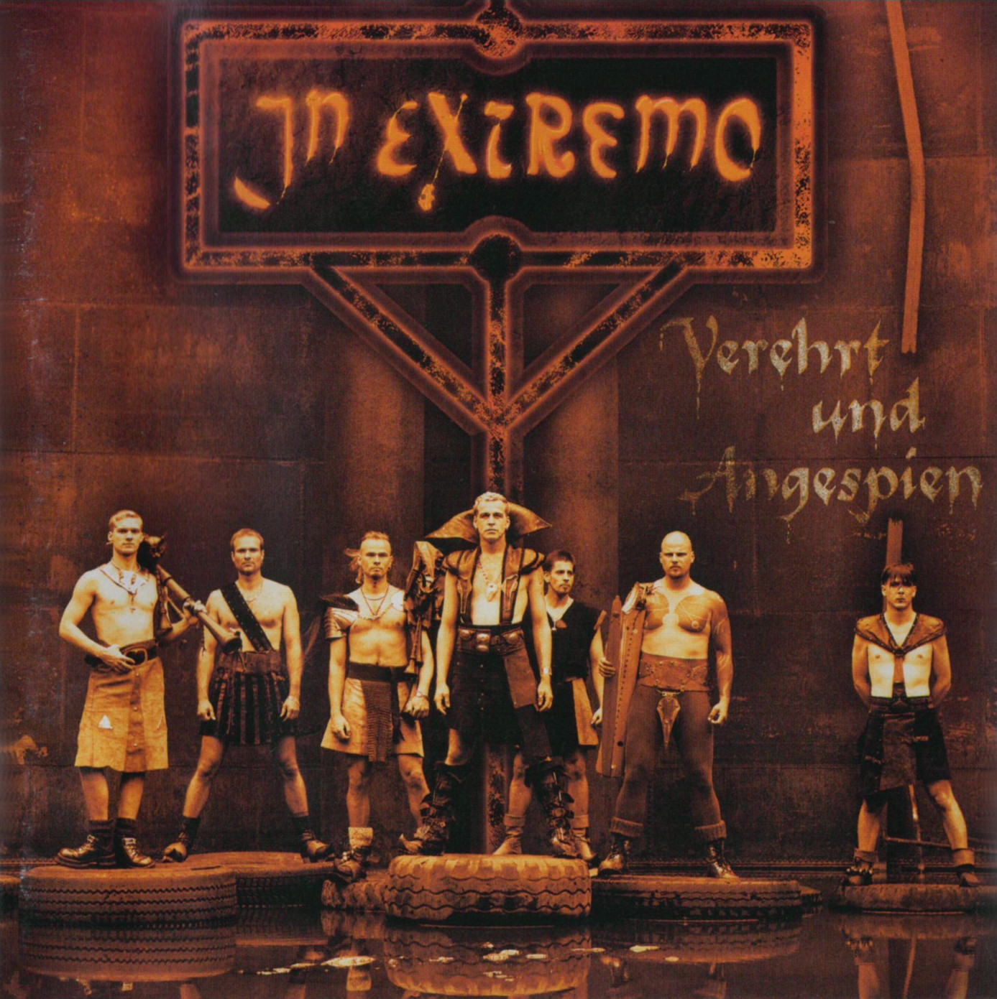
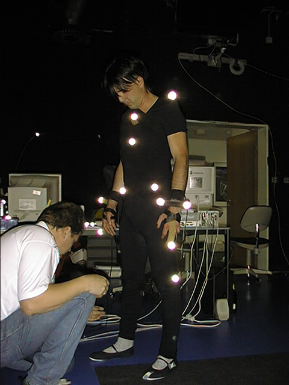
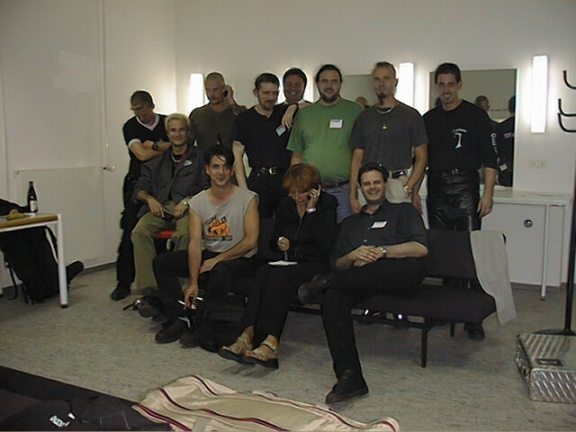
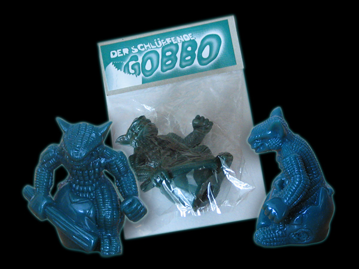

../ Ein Interview mit Tom Putzki
zum 20. Jubiläum von GOTHIC - Part 3
von Phoenix Tales
Audio: TomPutzki_PhoenixTales_20thAnniversary_Part3.ogg
Interview Transkript
Oliver: Willkommen zurück.
Tom: Danke. Fertig für Runde 3.
Oliver: Wir haben gerade noch gesehen, wir haben eine Story bezogene Frage glaube ich noch ein bisschen vergessen. Aber die schieben wir gleich nach und zwar betrifft die das Handbuch. Weißt du eventuell noch wie es zu diesem Handbuch kam, weil da ja auch eine Vorgeschichte der Welt erklärt ist und irgendwann wurde das dann auch als Nicht-Kanon erklärt. Weißt du noch wie das entstanden ist?
Tom: Also ich hab das Handbuch ehrlich gesagt jetzt nicht mehr großartig präsent.
Oliver: Ja, da wird die Vorgeschichte der Welt erzählt, König Rhobar heißt da noch Rhotbar, wahrscheinlich'n Tippfehler. Und ja, es wird ein bisschen erzählt wie die einzelnen Lager entstanden sind in der Barriere, beispielsweise. Aber das ging dann wahrscheinlich über den Publisher.
Tom: Mit ziemlicher Sicherheit.
Oliver: Okay, der hat dann geguckt, was er über das Spiel weiß und da mal schnell was drüber zusammengeschrieben wahrscheinlich.
Tom: Hmm ja, ich meine, es werden schon Leute von uns drauf geguckt haben, aber ich wars mit Sicherheit nicht.
Oliver: Da haben wir uns auch so ein bisschen überlegt in unserem Projekt, auch den Tippfehler uns sowas haben wir versucht plausibel zu erklären, um diese Logiklücken da zuzukleistern, wie der Name eventuell aus ner anderen Sprache kam und dann "myrthanisiert" wurde [von Rhotbar zu Rhobar].
Tom: Ha!
Oliver: Ja, ist ganz putzig. Aber was in dem Handbuch erzählt wurde ist auf jedenfall eigentlich ne nette Geschichte. Eigentlich ein bisschen schade, dass später dann gesagt wurde: Ne, das gehört nicht dazu.
Florian: Dann zu deiner Promotion/Presse Arbeit und so. Also wie wars mit dieser In Extremo Sache? Wie ist das ursprünglich so entstanden?
Tom: Oh, das ist recht einfach. Den Anstoß gab wie gesagt Markus Kark aus unserem Team. Der kam nämlich eines Tages zu mir ins Office und brachte mir eine selbstgebrannte CD mit. Und das war "Weckt die Toten" von In Extremo. Das war die zweite CD von In Extremo. Und die hab ich mir natürlich komplett angehört. Aber hab festgestellt, dass ich einzelne Geschichten davon schon kannte. Durch.. weiß nicht, lange Rollenspielnächte, Mittelaltermärkte, Live-Rollenspiel usw. Aber so in der ganzen Form hatte ich das noch nie gehört.
Dann haben wir überlegt und ich hab mir Gedanken dazu gemacht, dachte: Die sind eigentlich perfekt, um irgendwo irgendwie in unser Spiel zu kommen oder dass man sich gegenseitig promotet. Ich wusste auch noch nicht genau wie. Auf jedenfall hab ich mir dann herausgesucht, wer für In Extremo zuständig ist. Und das war ne Firma, ne Management Agentur in Berlin namens Absolute Promotions. Und die Managerin von In Extremo war eine Frau namens Doro Peters damals. Jo und die hab ich angerufen. Und die war mit der digitalen Branche nicht wirklich vertraut - lass es mich ganz vorsichtig formulieren. Und ich hab trotzdem sie am Telefon so zugequatscht, dass sie zugestimmt hat, dass wir uns nochmal treffen. Und wie es der Zufall so wollte - es muss so Frühjahr '99 oder so gewesen sein -, im Sommer '99 spielte In Extremo bei uns um die Ecke, in Düsseldorf. In einer Location namens Tor 3. Und dort waren wir dann verabredet.
Ja und dann bin ich halt zu diesem Konzert hin und der Termin war vor dem Konzert, das war das Interessante. Und es war'n strahlender Sommertag, das weiß ich noch, und wir haben im Außenbereich dieses Tor 3s, hinterm Backstage, uns getroffen. Und wir saßen um eine Feuerstelle, die zwar aus war, wie gesagt nachmittags oder früher Abend, strahlender Sonnenschein und eine Feuerstelle, eine offene, um die drei Baumstämme geschoben waren als Sitzgelegenheiten. Also viel passender konnte man die Location gar nicht haben.
Jo, und dann hab ich da gesessen mit der Managerin und sieben In Extremos und wir hatten ne Kiste Bier dabei und ne Flasche Jack Daniel's. Für die Credits, die Kiste Bier, das war KöPi, König Pilsener. Und dann haben wir halt lecker Bier getrunken und dann auch mal den Jack Daniel's später kreisen lassen und ich hab 1 1/2 Stunden geredet als ging es um mein Leben.
Und ja, danach haben wir gesagt: Okay, ist cool. Danach fand das Konzert statt und ich hab mein erstes In Extremo Konzert erlebt. Das war zu Zeiten lange bevor In Extremo so den richtigen, großen Durchbruch hatte. Das waren vielleicht 4-500 Leute in der Tor 3 Halle. Das größte was In Extremo dann später gespielt hat war eben in Wacken vor zigtausenden von Menschen. Und dann haben wir halt beschlossen: Jut, machen wa. Dann musste ich nur noch unsern Publisher überzeugen. Die Doro und die Band Mitglieder mussten die Plattenfirma - das war Universal Music - überzeugen. Und als uns das gelang hat man einer Kooperation zugestimmt, dann hat man das ein bisschen ausgearbeitet und dann haben wir die Idee ausbaldowert, dass die Jungs doch als 3D Charaktere in der Welt von Gothic ein Konzert geben.
Oliver: Sehr cool.
Tom: Ja. Da sie dann rechtzeitig vor Release ein neues Album rausgebracht haben, das war dann 'Verehrt und Angespien'. Ich glaube das erste Album von ihnen, das wirklich auf 1 ging.
Oliver: Das hatte ich auch noch als gebrannte CD tatsächlich [lacht].
Florian: Ich habs mir gekauft [nachdem in Gothic gehört].
Tom: [lacht] Und ja. Das war dann so ne Cross-Promo in dem Album, auf der CD waren noch irgendwie Gothic Aufkleber drauf oder irgendwie sowas. Wir haben 'n gemeinsames T-Shirt gehabt, ein Gothic T-Shirt, mit In Extremo Logo auf'm Ärmel. Und meine Güte, wir hatten dann später in der Packung glaube ich noch irgendwas von In Extremo. Ja, auf jedenfall, was natürlich auch sehr gut geholfen hat: So ne Kooperation in dieser Form hats noch nicht gegeben. Das heißt, die Presse aus beiden Branchen hat sich drauf gestürzt. Die In Extremos haben Interviews an Magazine wie PC Games, PC Action usw. gegeben. Ich hab Interviews für Metal Hammer, Rock Art und sowas gegeben. Also es hat schon wirklich dafür gesorgt, dass die jeweils andere Industrie von der Existenz des Kooperationspartners erfahren hat. Und darum ging's ja letztendlich.
Wir brauchten sie nicht bezahlen, sie brauchten uns nicht bezahlen. Unser Publisher hat die GEMA Gebühren übernommen. Das ist übrigens auch der Grund, weswegen diese In Extremo Szene, das Konzert, nur in der deutschen Version ist. Weil für Deutschland wurden die GEMA Gebühren bezahlt, aber für die ausländischen Territorien nicht. Dementsprechend ist das Konzert für viele Fans, die wir gerade in Osteuropa haben und die dann zum ersten mal die heimische Version spielen und dann später auf In Extremo stoßen, ne große Überraschung. Das hab ich immer wieder bei Gesprächen und Interviews in Polen oder in Russland oder in der Ukraine oder in Tschechien festgestellt. Da wimmelt es von Gothic Fans, aber diese In Extremo Geschichte ist etwas, was sie entweder nicht wissen oder was sie zutiefst bedauern, dass es in ihren ureigensten Versionen nicht drin ist.
Oliver: Das war auf jedenfall ne gelungene Sache damals. Ich hab auch glaub ich nie wieder ne wirkliche Band in nem Computerspiel gesehen. Ich kann mich nicht an sowas erinnern.
Florian: Ich glaube später gab es Remedy Entertainment, die Max Payne gemacht haben, die hatten Alan Wake und da war glaub ich auch ne Band mit drin ["Old Gods of Asgard", mit The Poet and the Muse etc., gespielt von den Poets of the Fall; mit denen gab es natürlich schon in Max Payne eine Kooperation mit dem Theme Song Late Goodbye, aber da waren sie nicht direkt im Spiel. Zu ihrem jüngeren Spiel "Control" gibts auch wieder eine Kooperation mit Poets of the Fall.] Aber sonst fällt mir jetzt auch nichts ein.
Tom: Naja. Also... ihr werdet ja sowieso fragen, was ich heute mache. Dann kann ich ja schon ein bisschen vorgreifen. Ich bin bei Wargaming und die sind vorallem bekannt durch World of Tanks. Und in World of Tanks gab es schon durchaus einige Kooperationen, mit beispielsweise Sabaton, mit The Offspring. The Offspring hat in der Panzer Garage - ich glaube das war um Weihnachten 2019 rum -, ein 3-4 Song Konzert gegeben und die Jungs waren auch als 3D Figuren da. Also im Grunde haben wir das dann wiederholt, was wir vor 20 Jahren bei Gothic [gemacht hatten].
Oliver: Interessant! Wie habt ihr das damals technisch eigentlich realisiert? Habt ihr die Leute gemocapped oder habt ihr das von H...
Tom: Japp, wir haben sie gemocapped. Wir hatten sie in einem 3D Scanner.
Tom: So sah es dann wirklich aus. Der entsprechende MoCap-Anzug und der mit Markern beklebte Körper.
Oliver: Ihr hattet ja auch in Gothic noch andere Animationen per Motion Capturing reingebracht, die Tänzerin glaube ich und auch ein paar Schwertkampf...

Tom: Ja, jede Menge Schwertkampf Sachen.
Oliver: Die es aber nicht ins fertige Spiel geschafft haben oder?
Tom: Doch, doch, doch. Sicher.
Oliver: Weil ich erinnere mich an so ne ganz frühe Demo, wo man im Prinzip nur in diesem unterirdischen Tempel rumläuft, da sahen die Schwertkampf-Animationen noch'n bisschen anders aus als sie dann im fertigen Spiel aussahen. Deswegen... wusste nicht, ob das Motion Capturing vielleicht aus Kostengründen zwischendurch irgendwann mal abgebrochen wurde.
Tom: Ne, das wurde, also schon einiges wurde mit Motion Capturing aufgenommen. Aber es kann sein, dass hinterher vielleicht die Animationen dann im Laufe der Jahre - wir müssen ja bei der Gothic Entwicklungszeit von Jahren sprechen -, dass die Animationen dann einfach besser wurden als die MoCap Geschichten. Das ist vielleicht durchaus möglich.
[ Einige Animationen scheinen jedoch in den frühen Demos (0.56c und 0.64b) zum Teil tatsächlich flüssiger gewesen zu sein als die Animationen im fertigen Spiel. David hat das für mich überprüft und hier ein kurzes Beispielvideo hochgeladen, das veranschaulicht, dass die alte Animation (rechts) geschmeidiger ist als die neue (links). Wir vermuten, dass das an der Veränderung des Rigs und Body Models liegt. Damals gab es noch vom Körper getrennte Limbs. Als sie dann auf ein Ganzkörpermesh wechselten, bei dem alles (außer der Kopf) direkt miteinander verbunden war, mussten viele Animationen auf das neue Rig angepasst werden. Das mag dazu geführt haben, dass einige Animationen in der fertigen Fassung weniger geschmeidig sind als sie ursprünglich waren. Alex Brüggemann, der für die Animationen verantwortlich zeichnet, können wir nicht mehr zu Rate ziehen, er ist leider vor einigen Jahren verstorben. - Flosha]
Florian: Dann noch eine kurze Sache zu In Extremo. Du hast erzählt, als ihr da an dem Lagerfeuer gesessen habt, dass du um dein Leben geredet hättest. Heißt das, du hast versucht In Extremo von Gothic zu überzeugen, zu begeistern? Oder was meintest du damit?
Tom: Ja! Auch die Jungs waren nicht großartige Spieler oder sowas. Ich hab sie versucht von Gothic, von uns - von Piranha Bytes, von der Gamesbranche und den Möglichkeiten zu überzeugen. Ich meine, die Jungs waren Musiker, die ganz platt gesagt gerade erst von Mittelaltermärkten auf die größeren Bühnen und Konzerthallen der Republik gegangen sind. Und die hatten wie gesagt zwei Alben draußen und die Masse war wirklich noch so mittelaltermäßig, da kamen sie her. Ja und ich hab ihnen jetzt sozusagen in 1 1/2 Stunden Gequassel eine ganz neue Welt eröffnet.
Tom: Das letzte Bild, das ich da gepostet habe ist so'n Gruppenbild, In Extremo, unsere Crew, mit der wir bei den MoCap Aufnahmen waren. Die Dame am Telefon vorne in der ersten Reihe, das ist Doro, die Managerin von In Extremo. Und der Herr direkt über ihr in schwarz, mit Bart, das ist Markus Kark. Ich hatte den vorhin schon erwähnt. Das war derjenige, der hier sozusagen den Anstoß gab und mir 'Weckt die Toten' als selbstgebrannte CD gereicht hat.
Oliver: Okay, cool. Damals Piranha Bytes Mitarbeiter oder...
Tom: Ja ja, klar, sicher [siehe die Team Präsentation]. Genau wie der Kollege im grünen T-Shirt, das ist Steffen Rühl, der war damals für die Story zuständig. Und der einzige, der sozusagen nicht zu In Extremo oder Piranha Bytes gehört, ist der Grinsekopf genau zwischen Steffen und Markus. Das ist der Leiter des MoCap Studios.
Oliver: Cool, danke, coole Bilder.
Tom: Um einen Satz noch zu machen. Mit In Extremo, zumindest mit Teilen davon, hat sich ne ganz gute Freundschaft entwickelt seitdem. Und ich besuch' immernoch jedes Konzert in der Nähe, wo ich hin kann und treff' dann die Jungs backstage und freu mich sehr und trink mit ihnen ein gepflegtes Bier oder zwei.
Oliver: Das ist cool, das ist cool. Auch so lan..
Tom: Japp, das mach ich immernoch.
Oliver: Das ist schön. Bei Mike glaub ich gabs noch solche Schmeiß-Gobbos...
Tom: Oh mein Gott, oh mein Gott, hahaha!
Oliver: Was habt ihr da eigentlich alles produzieren lassen? Vielleicht auch Dinge, die die Welt noch nicht kennt?
Tom: Ähm, ja ne, also wenn wir Dinge produziert hätten, die die Welt noch nicht kennt, dann würden sie ja alle irgendwo verpackt rumstehen, aber das wüsst' ich jedenfalls nicht. Gut, die Schmeiß-Gobbos waren schon legendär und die Trollfiguren waren auch schon klasse.
Oliver: Dadurch hab ich jetzt durch diese Recherche zum ersten mal gehört. Also ich wusste, dass es diese Trollfigur mal irgendwie gab, aber ich dachte auch, vielleicht war das nur so ne einzelne..

Tom: Ne, ne, die gabs wirklich. Ja, ich hatte mal mehrere davon. Aber alle sind irgendwo irgendwie an Freunde oder Bekannte weg gegangen. Das heißt in meinem Archiv fehlen wirklich.. das fehlt komplett. Ich hab keine Trollfigur mehr, ich habe keinen Schmeiß-Gobbo mehr und ich habe auch den Comic nicht mehr. Und ich hatte wirklich in meinem Büro damals ne Kiste mit zwanzig, dreißig Comics. Die sind alle, alle wirklich weg gegangen. Und ich besitze selber keinen. Das macht mich auch etwas unglücklich, muss ich ehrlich sagen...

Florian: Ich hab leider auch keinen [sonst hätte ich ihn Tom gegeben. Ich bin an solchen physischen Goodies nicht wirklich interessiert, also wenn irgendwer einen hat oder sogar einen zweiten, wäre ich froh, wenn ihn mir jemand zuschicken könnte, dann gebe ich ihn Tom. - Flosha].
Oliver: Ja, ich [hab] auch keinen.
Florian: Die kosten heute um die 150 Euro oder so.
Oliver: Das reicht nicht. Ich hab mal geschaut: Für 300 hab ich einen auf ebay mal gesehen...
Tom: Unfassbar.
Oliver: Ich weiß nicht, was die Schmeiß-Gobbos heute wert wären.
Tom: Ha, ich weiß noch, dass ich in meinem Büro gut und gerne n' halbes Dutzend von denen unter der Decke kleben hatte. Die dann irgendwann mal so vereinzelt runterfielen.
Oliver: Hat man die damals für Spielemagazine oder für irgendwelche Hefte produzieren lassen oder..
Tom: Äh, ja, ja, sicher. Es war auf jedenfall ne Beilage für irgendnen Heft, wenn mich nicht alles täuscht.
[ Es war ne Beilage des YPS Magazins, also nicht in mehreren Heften oder sowas, wie Oliver angedeutet hat. - Flosha ]
Oliver: Da ist noch eine Cross-Promotion Frage zum 13ten Krieger, die Florian hier noch im Doc hatte.
Tom: Au ja, stimmt.
Oliver: Wie ist die zustande gekommen eigentlich? Weil das war auf der deutschen.., wenn man die Installationsdatei ausgewählt hat, hat das noch so ich glaub nen Trailer oder nen Link zur Wegpage gebracht.
Tom: Ja, ja, das ist durch unseren Publisher zustande gekommen. Das war so etwas was der mal da mit reingebracht hat. Und naja... joa, 13. Krieger... hm. Also schlecht war der Film nicht. Hat Spaß gemacht. Und der Sound damals war sehr beeindruckend, daran entsinne ich mich noch sehr. Wenn diese Bärenmänner, ich weiß nicht mehr wie sie hießen im Film, aber die bösen Gegner, wenn die dann angeritten kamen durch den Nebel, mit den Fackeln, dann hat so die ganze Hütte gedonnert. Das war schon nicht schlecht.
Oliver: Der 13. Krieger, das ist vielleicht so'n Fun Fact, weil mich hatte das auch mal interessiert. Der Film ist an einigen Stellen brutal zusammengeschnitten worden, weil der auch unbedingt released werden musste und die Kosten aus dem Ruder gelaufen sind. Und das fand ich interessant, weil da auch die Cross-Promotion zwischen dem und Gothic.. und Gothic musste ja auch dann am Ende einfach schnell fertig werden, wie du's vorhin gesagt hast. Und dass es dann diese Parallele gibt zwischen den beiden Dingen.. Beim 13ten Krieger war auch der Soundtrack... da wurde auch viel mehr komponiert als am Ende in den Film kam. Der wurde dann in Kingdom of Heaven, viele Jahre später, kamen diese Schnipsel dann endlich unter.
Tom: Okay! Nice. :)
Oliver: Also das war auch so'n cooles Werk, wo leider aus Zeit- und Kostengründen die Schere angesetzt wurde.
Tom: Ja, sowas kommt natürlich vor. Bedauerlich, aber is so.
Oliver: Dann haben wir noch ne Frage zu den, zumindest in der Community halbwegs legendären, Promotion-Postern, mit dem: "Geh nie nachts allein in den Wald!" oder "Kommst du lebend raus?" oder "Ein Mörder, ein Ketzer, ein Dieb [und ein Deserteur] sind deine einzigen Freunde", sowas. Weißt du noch wer die gemacht hat? Wer auf diese Idee kam?
Tom: Also ich kann mich ehrlich gesagt überhaupt nicht an diese Dinge erinnern, muss ich ganz ganz ehrlich sagen.
Oliver: Wir finden die im Team halt auch sehr cool. Und wir haben selber von der Art n'bisschen Promo Artworks für unsere Mod erstellt*, weil es halt durch diese direkte Ansprache irgendwie ziemlich cool wirkt, also den (potentiellen) Spieler halt super anspricht. Und ja, dachten, das passt halt einfach insgesamt extrem gut ins Gesamtkonzept und [hab mich gefragt], wer da der geistige Vater war. Aber du warst es nicht.
[* Oliver bezieht sich damit auf zwei Artworks von mir, einmal unseren Phoenix Slogan, mit "Erträgst du die Träume des Schläfers?" Oder, für Nemesis: "Wirst du zum Ketzer?" Die habe ich schon vor Jahren erstellt. - Flosha ]
{kind=link}
Tom: Ne, ne ne ne, damit hab ich nichts zu tun.
Oliver: Okay. Dann zu den Promo Artworks, die letzte Frage, die wir dazu noch hätten ist, ja: Kurvige Frauen in knappen Outfits und schwarze Muskelprotze mit Lendenschurz und Axt... Also, die sind ja schon irgendwie sehr kultig. Aber aus heutiger Sicht halt einfach auch brutal sexistisch. Beschäftigt man sich da rückblickend manchmal noch mit solchen Sachen? Und hats da vielleicht auch in der Spielebranche so'n bisschen 'nen Wandel bewusst davon weg gegeben oder sagt man: Na das war halt damals so die Mode, da gabs auch Conan der Barbar als Film und so, das war halt einfach so und das haben wir mitgemacht?
Tom: Also damals war es so, damals hat man sich keine großartigen Gedanken drüber gemacht. Heute wär das natürlich schon nicht mehr ganz so einfach. Es gab auch'n bewussten Wandel in der Spielebranche und die klassischen Booth Babes auf Messen sind nun auch in gewisser Weise nahezu ausgestorben. Ja es hat sich schon wirklich deutlich, deutlich gewandelt. Damals haben wir uns ernsthaft keine großartigen Gedanken drüber gemacht und haben einfach.. n'bischen Gas gegeben.
Oliver: [lacht] Also wie gesagt, Kultstatus haben sie auf jedenfall, aber klar, wenn man so'n Spiel nach 20 Jahren sieht.. Es gab ja auch vor kurzem diese Diskussion in World of Gothic, ob man das 'Babe' aus dem G, das halbnackte Babe aus dem Header quasi rausnimmt.
Tom: Ahja..
Oliver: Ja, die nächste Frage ist dann zu den Reviews. Ich weiß nicht, willst du die machen Florian?
Florian: Ja, da kam nur aus der Community die Frage, ob du immer diese ganzen Previews und Reviews auch gelesen hast, die über Gothic geschrieben wurden damals.
Tom: Ja selbstverständlich! Selbstverständlich, klar. Natürlich hab ich die gelesen. Logisch, haha. Das ist überhaupt keine Frage.
Florian: Und - da hatte ich auch mit Mike ein bisschen drüber geredet - da kamen schon öfter mal vor, dass die auch so'n bisschen was gespoilert haben von der Story oder so. Gabs da auch mal Momente, wo du dir gedacht hast: "Oh nein, warum haben die das jetzt geschrieben" oder so?
Tom: Ähm ja, da ist man immer.. man versucht die Balance zwischen Vorsicht, damit man nicht zuviel spoilert, aber eben auch das ganze so interessant wie möglich zu gestalten und anzuteasen. Und manchmal gelingt einem genau dieser goldene Grad, manchmal überschreitet man diese thin red line in die eine Richtung, also man verrät vielleicht etwas zu viel, manchmal verrät man zu wenig und kreiert damit nicht genug Aufmerksamkeit. Also das ganze muss sorgfältig abgewogen werden und manchmal geht es, manchmal geht es nicht. Ganz einfach.
Florian: Ja. Zu der letzten Sektion hab ich mich gefragt: Du hast mir gegenüber schon erwähnt, dass du auch bei Gothic 2 noch ein bisschen in der Marketing Arbeit involviert warst. Gilt das auch für das Gothic Sequel, das vorher der Nyul und Brüggemann noch am entwickeln waren? Hast du da auch was damit zu tun gehabt?
Tom: Puh, ich bin nicht ganz sicher, muss ich ganz ehrlich sagen. Über welchen Zeitraum sprechen wir da eigentlich? Weil ihr habt da mit Sicherheit.. [Kurze Unterbrechung wegen Klingel. :) ]
Florian: Ähm, dann hab ich noch ne kurze Frage dazu, wie das dann kam, dass du Piranha Bytes verlassen hast, weil du bist ja so als erstes gegangen glaub ich von den vier Gründern.
Tom: Ja.
Florian: Also du musst jetzt nicht, wenn das irgendwie.. mit Phenomedia, mit dem Chaos das damals gelaufen ist, wenn das jetzt zu ausufernd wäre.. Ich glaube in diesem einen Interview (Auf der Alm), hast du das ja auch schon angeschnitten. Wenn du da vielleicht kurz was dazu sagen kannst.
Tom: Ja, wir hatten natürlich'n Börsengang [einen/am/im ?] neuen Markt und da ich bei Piranha Bytes mit Kommunikation und Marketing ganz gut erfolgreich war, wurde ich halt von unserer Mutterfirma gebeten, als Marketingleiter in die Phenomedia zu gehen und dort dann den Börsengang zu begleiten. Und alle weiteren Kommunikations- und Marketingaktivitäten zu leiten usw. Und das war natürlich ne extrem spannende Aufgabe. Deswegen bin ich damals zur Phenomedia hoch gewechselt. Ich hab mir aber immer ausgedungen, dass ich Piranha Bytes und die Titel von denen weiter direkt betreuen.. dürfte/könnte usw. Und das hab ich dann auch gemacht.
Florian: Also heißt das, du warst dann auch noch über Gothic 2 hinaus, auch noch bei Gothic 3 noch irgendwie [im Marketing] dabei?
Tom: Ne, bei 3 nicht mehr. Und das war auch schon die Zeit, da war die Phenomedia auch schon im Arsch und ich hab auch mal die Phenomedia irgendwann verlassen.
Florian: Ja. Ja klar. Achso, die Frage hatte ich eben.. da hatten wir angefangen und die hatte ich dann vergessen. Ob du auch bei dem Sequel von Stefan Nyul und Alex Brüggemann noch dabei warst.
Tom: Ja und ich hatte euch gefragt, wann war das eigentlich?
Florian: Ähm... März 2001 etwa?
Oliver: Das war ja nur'n kurzen Moment in Entwicklung und wurde dann letzten Endes zugunsten von Gothic 2 eingestampft. Das war vielleicht so'n Zeitrahmen Release Gothic 1 bis vielleicht Weihnachten 2001?
Florian: Ne, noch nichtmals.
Tom: Also ich weiß dass ich mit Mike und Alex darüber geredet habe immer mal wieder, klar. Äh Quatsch, mit Stefan und Alex. Weil wir hatten ja nun lange gut und erfolgreich zusammengearbeitet, waren Freunde und natürlich redet man dann darüber. Aber direkt involviert, nein.
[ Das Gespräch fand am 13.02.2021 statt. Das Audio wurde aufgenommen von Oliver und zugeschnitten und transkribiert von Florian. Der vierte Teil folgt bald...]